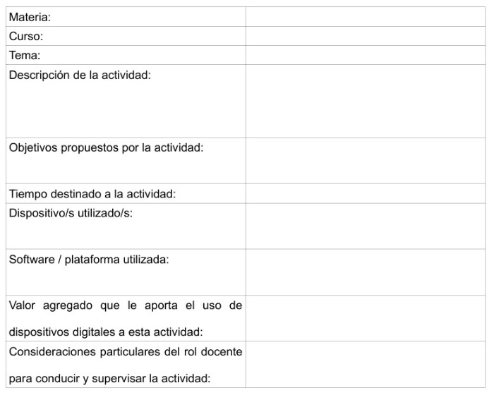

Propuesta de trabajo
Nos encontramos en la mitad de esta capacitación; vistos y analizados los materiales propuestos en las primeras dos unidades temáticas, estamos en condiciones de proponer un plan de trabajo para diseñar intervenciones específicas en nuestro contexto local, con el objetivo de generar una integración apropiada de los dispositivos digitales al proceso de enseñanza siguiendo los aspectos destacados por UNESCO.
Para considerar el uso de la tecnología en la experiencia educativa solo en las actividades que fueron diseñadas con la finalidad de generar un valor agregado, debemos impulsar un rol de centralidad por parte del personal docente, con capacidad de dirección y supervisión de las actividades.
Seguidamente dejamos un modelo de planificación para el diseño de secuencias didácticas:
*(ver ejemplo de planilla confeccionada para este taller al final de esta unidad)
Si bien las actividades educativas mediadas por tecnologías digitales pueden tener múltiples formatos, en aquellas que están diseñadas en softwares de uso educativo proponemos la utilización de alternativas de software libre, observando algunas ventajas como su adaptabilidad a una necesidad concreta y contar con la posibilidad de utilizar licencias libres.
En este caso proponemos el uso del software eXeLearning para la creación de contenidos didácticos, mediante esta alternativa podemos integrar recursos audiovisuales, enlaces, documentos de texto, articular herramientas interactivas, diseñar cuestionarios, entre otros, que nos permitirán construir actividades educativas.
Este software cuenta con un amplio uso en materia educativa y dispone de versiones de instalación en distribuciones Windows, Linux y Apple.
Para publicar la actividad y ser accesible en línea, resultará necesario disponer de un alojamiento de web, que puede ser parte de un sitio propio del establecimiento educativo, en el cual se genere un espacio de acceso a estos recursos (creando un repositorio).
Destacamos la importancia de generar repositorios de recursos educativos abiertos, puesto que mediante ellos podemos contar con espacios de consulta, disponer de recursos para su re utilización y fomentar la participación de toda una comunidad educativa.
Actividad:
- Dejamos un enlace al sitio de eXeLearning a los fines de que indaguen sobre este software. Si se animan, pueden instalarlo y comenzar a diseñar alguna actividad o recurso didáctico.
- Dejamos un enlace al sitio de Procomún con el fin de que observen un ejemplo de repositorio con recursos educativos abiertos, allí podrán encontrar secuencias didácticas publicadas por otros docentes.
{kind=link}